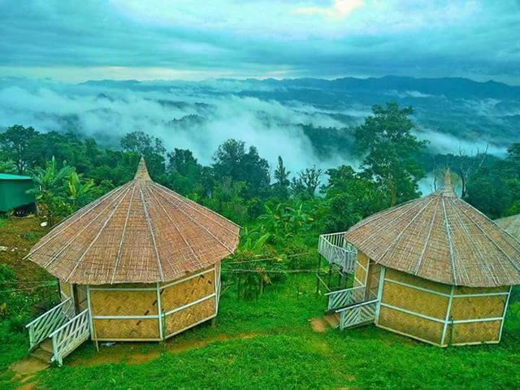
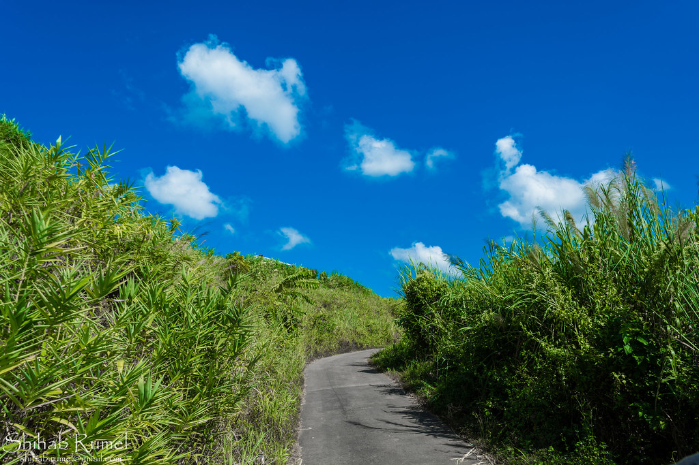

Sajek is a union at Baghaichari Upazila in Rangamati districts. Basically it is name of a river which separates Bangladesh from India. The river flows into the Karnafuli River in the Chittagong Hill Tracts. Sajek Valley is situated in the North angle of Rangamati, near the Mizoram border boundary area. The valley is 1,800 ft high form sea level. Many small rivers flow through the hills among them Kachalon and Machalong are famous. The main ethnic minorities on the valley are Chakma, Marma, Tripura, Pankua, Lushai. The place is known as hill queen for its natural beauty and roof of Rangamati. Marishsha is a name of a place near Sajek Valley. Most of the houses are made with bamboo. There is another place near Sajek, it is Kanlak, and it is famous for its orange orchard.
Most attractions of the spot are sun set, rain, morning, evening, and night and aborigine people. Tourists can buy indigenous peoples' products from haat (markets). Roads are like big snake spirals on the mountains. Most of the people are Buddhist and others are Christian here. A new road has been built up to the Ruilui Para by the guidance of Bangladesh army. On the way traveller need to take permission from the army camp. Bangladesh army is very helpful and cooperative. Now mobile network is available here. The valley is in Rangamati but tourists can reach there from Khagrachhari too. The route is Khagrachhori – Dighinala Bazaar – Bagaihat Bazaar – Machalong Haat – then Sajek. It is 62 km from Khagrachhari. Dighinala to Sajek is 40 km. Main transportation is Chander Gari.
 